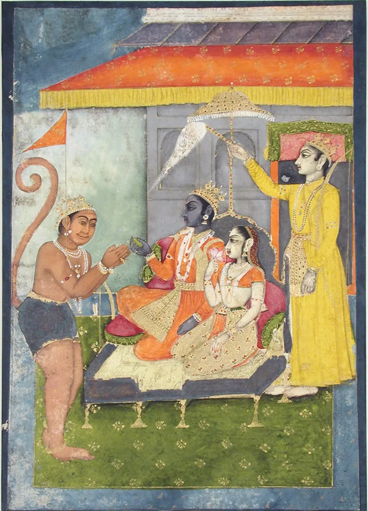
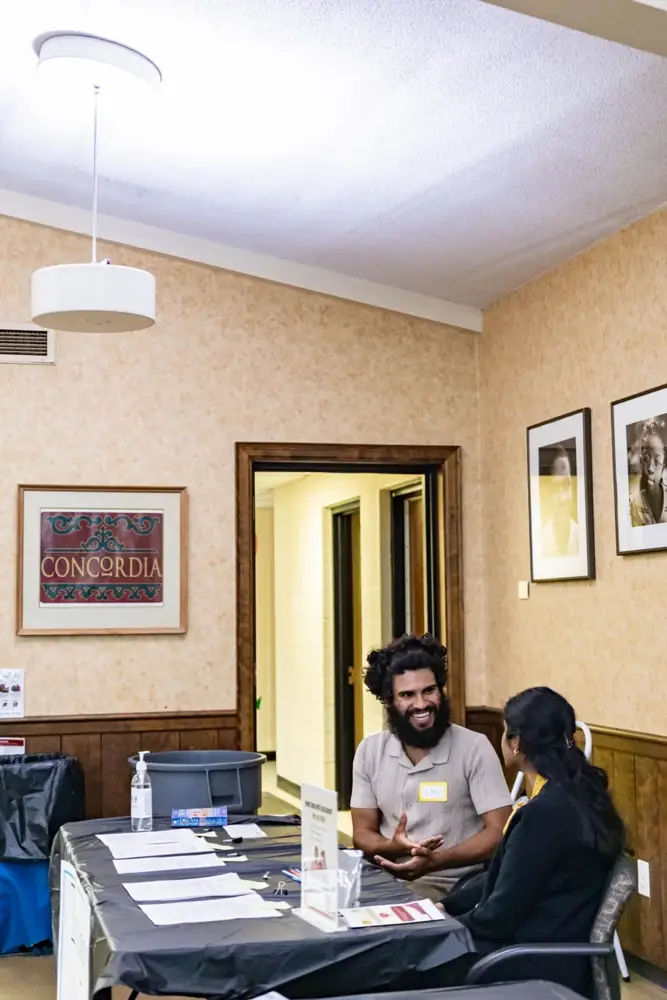
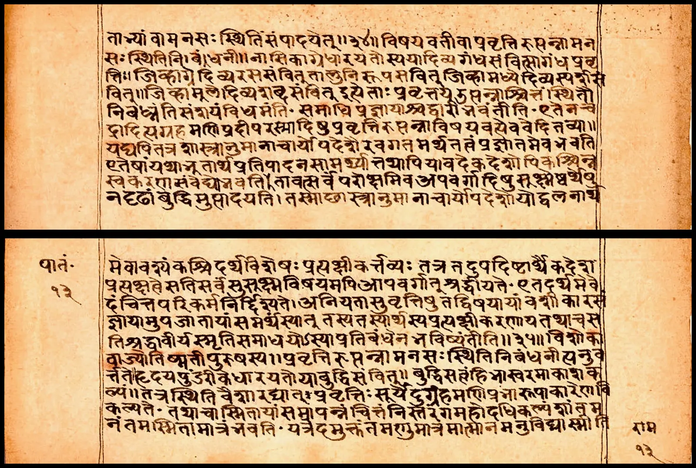
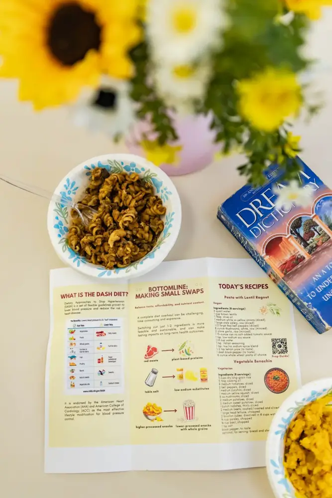
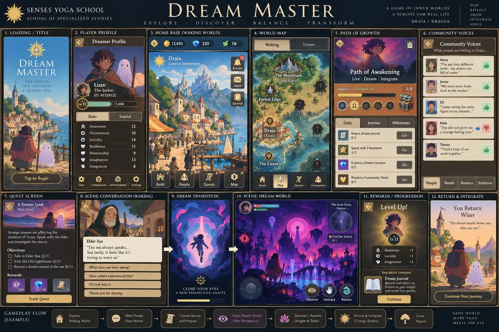

Waking
Awareness engaged with the outward world and everyday experience.
The Heroic Yogi blog on Patreon shares reflections from the school’s unfolding practice. Read, notice what speaks to you, and follow that curiosity into study, community participation, or service.
Explore Heroic Yogi on Patreon →
Current study draws from texts used in the Heroic Yogi curriculum and the Library of Consciousness. The school distinguishes source texts, interpretation, personal reflection, and emerging research.
Browse study resources →The Māṇḍūkya Upaniṣad offers a concise framework for examining waking (jāgrat), dreaming (svapna), deep sleep (suṣupti), and turīya—the fourth, understood as the underlying reality beyond the three ordinary states. These teachings inform our study of dream experience, self-inquiry, and contemplative practice without reducing them to modern scientific claims.
Awareness engaged with the outward world and everyday experience.
Experience within the dreaming mind and the inward field of images.
Study of dreamless sleep and the limits of ordinary knowing.
The fourth: not merely another dream state, but the nondual reality described by the text.
Our developing research pathway explores meditation, attention, sleep, dreaming, and memory alongside close study of the Māṇḍūkya Upaniṣad. Apprentices investigate what classical teachings say, what contemporary sleep and cognitive science can measure, and where meaningful questions remain open.
Inquiry may include reflective sleep and dream journals, reading and source comparison, meditation practice, and ethical discussion of research methods. The Upaniṣad's account of turīya is a philosophical and contemplative teaching—not a scientifically established sleep stage.
Explore dream research →Video inquiry · Watch, reflect, and compare perspectives with the source text. Open on YouTube ↗
Classical contemplative interpretation is presented distinctly from empirical sleep science. Study includes the text, guided reflection, and comparative inquiry.
Continue in the Library of Consciousness →
A developing public and collaborative framework for dream inquiry, reflection, mentorship, and interdisciplinary connection.

Close engagement with yoga philosophy, the Rāmāyaṇa, Upaniṣadic study, Haṭha Yoga sources, and related contemplative traditions.

Developing inquiry into dream experience, cognition, and literature on dream therapies.
Explore the research direction →Co-created by student David Samael and founder Luan Seguim-Arnold
Dream Master is a mobile conscious game-development project within Specialized Studies, connecting dream exploration, story, reflective choice, and interactive design. Creative Arts contributes through visual storytelling, sound, and world-building.
The project is in its writing and mobile concept phase. Administration, coding, design, creative production, and research support offer ways to help the work grow as its scope and team develop.

Concept images describe work in development; mechanics, interfaces, and visual designs will evolve through the project.
Contribute to Dream Master Connect with Creative Arts →In Day 67 — The Thirteenth Gate: Death, Rebirth, and the Witness — Yoga Through the Gita, Luan explores numerology and multiple dream symbols as invitations to meditation practice and reflection.
Within Specialized Studies, we explore sacred symbols, personal associations, and contemplative interpretations through attentive listening and inquiry. Bring a journal, notice which image or number draws your attention, and allow space for your own reflection.
Watch the full reflection on YouTube →
Observe a number, image, or dream symbol that stays with you as you listen.
Write about the memories, feelings, questions, or sacred associations that arise for you.
Return to quiet attention and notice how your relationship with the symbol develops over time.
A developing research direction for studying dream cognition, dream experience, and literature on dream therapies. Contributors can help gather sources, organize questions, document reflections, and build connections with qualified researchers and practitioners.
Research and educational inquiry are distinct from providing therapy. Any future therapeutic service or participant research will need its own qualified leadership, scope, and appropriate review.
Express interest in research support →Chess offers a shared practice of attention, patience and strategic thinking. Senses Yoga School currently meets with Bradford Beach Chess through Saṅgha — Clubs & Community Circles.
Visit Chess Club →Specialized Studies is not presented as a fully scheduled public department yet. Current work grows through apprenticeship study, Dream Connections, the Library of Consciousness, Dream Master development, chess gatherings, and selected collaborations. Dates and project participation are coordinated through the school.
See current gatherings →Begin with what draws you here. Students, volunteers, creators, and partners each help the school grow through participation and shared responsibility.
Help organize project records, schedules, communications, and contributions so the school’s work can be sustained by a growing team.
Share your interests →Express interest in Dream Master prototyping, mobile interfaces, accessibility, testing, and technical documentation.
Share your interests →Support literature review, careful sourcing, research organization, and inquiry into dream cognition and dream therapies.
Share your interests →Contribute story, sound, visual work, chess gathering support, and learning-event assistance across connected schools.
Share your interests →These are ways to express interest as the school’s team grows. Specific roles, responsibilities, and any compensation are confirmed individually; participation depends on the project, preparation, and available supervision. Community volunteering begins with the school’s interest form; apprenticeship fieldwork follows an individually approved placement.
At the Neighborhood House health fair, Luan brought a Dream Dictionary exercise around the exhibit tables to invite reflection, mindfulness, and connection. The Library of Consciousness supports these meetings between study and daily life.